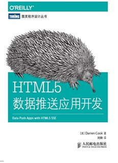

[评]HTML5数据推送应用开发
《HTML5数据推送应用开发》不仅介绍了HTML5的服务器端推送接口SSE,还介绍了向后兼容方案，服务器端代码实现，性能优化最终打造一个产品级品质的产品。

该书最适合有PHP基础，想要打造产品级品质的服务器端推送应用。第二适合，想要打造产品级品质的产品的人。如果只是想要学习服务器端推送的话，还是建议直接去看API。美中不足之处是后端使用了PHP语言，如果能用nodejs就好了。
精彩部分
$( function(){ setTimeout( connect, 100); }); 我们用了一个 0.1 秒的延时因为有些版本的浏览器需要这样。比如，Safari的某些版本，如果不用延时，你可能会看到“加载菊花”一直在转呀转，我讨厌 100 毫秒这个“魔法数字”，但它确实有用。
一种数据存储的优化方案是用 setInterval 每隔 30 秒保存一次数据，而不是每次获得数据的时候。这显著地降低了CPU的使用。需要注意的事是，关闭浏览器时，在上一次保存之后传过来的数据会丢失。
产品级品质要求当出现错误时系统能自动修复，能适应现实世界的各种限制
只写一句 var d = JSON.parse( s); 是不够的，达到产品级品质要这样写：1
2try { var d = JSON.parse( s); }
catch (e) { console.log(" BAD JSON:" + s + "\ n" + e); return; }
能够准确的报告错误。
长连接可以简单地通过发送 SSE 注释行来维持。
发送 SSE 注释行和发送 SSE 数据行的区别在于后者触发了 EventObject 的消息事件处理程序，而前者没有触发。
没有使用SSE自带的重连机制有两个原因：第一个原因是只有套接字死得优雅干脆利落时浏览器才会重连；第二个原因很合理而且简单，代码要适用于向后兼容方案，这也是为什么长连接消息要像普通消息一样能用 JavaScript处理。
重连函数1
2
3
4
5
6
7
8
9
10
11
12
13
14
15
16
17var keepaliveSecs = 20,
keepaliveTimer = null;
// 重连函数，将该函数放入数据处理和连接函数中，20秒没有收到消息，自动重连。
function gotActivity(){
if(keepaliveTimer != null) clearTimeout(keepaliveTimer);
keepaliveTimer = setTimeout(connect,keepaliveSecs * 1000);
}
// 数据处理函数
function processOneLine(s){
gotActivity();
//...
}
// 连接函数
function connect(){
gotActivity();
if(window.EventSource)startEventSource();
}
服务器关闭了套接字，浏览器会执行如下几步。
- 设置 readyState （EventSource对象的一个属性）值为 EventSource.CONNECTING 。
- 调用 error 事件处理程序。
- 等待 retry 延时时间，然后重新连接。
如果把发送长连接消息的时间间隔设置太长，浏览器（或者中转媒介）会认为出错了，并关闭套接字，尝试重连，这样整体上会造成更多负载。所以只能在 15 ~ 40 秒这个范围内调整重连时间
以通过在SSE消息中添加这一行来修改默认的内置重连时间：retry:10000
防止瞬间并发量过大的情况,将客户端的连接尝试随机地均摊在约定连接时间的前 60 内1
2
3
4
5
6
7
8
9
10
11
12
13
14
15function temporarilyDisconnect(secs) {
var millisecs = secs * 1000;
millisecs -= Math.random() * 60000;
if (millisecs < 0)
return;
if (keepaliveTimer) {
clearTimeout(keepaliveTimer);
keepaliveTimer = null;
}
if (es) {
es.close();
es = null;
}
setTimeout(connect, millisecs);
}
在id:字段使用JSON对象，有一件事需要注意：如果达到 100 多字节，就不能用GET请求了，需要用 Cookie。如果达到了几千字节，通过 HTTP 请求头发送时会有问题（记住是 SSE 发送这个请求头，我们不能控制它）。特别是当请求头的总大小（请求行，所有的请求头，包括user agent 和所有的 Cookie）超过 8 KB时，大部分网络服务软件会报错（返回 413 状态码）。
向后兼容方法长轮询的优化方案：
- 让客户端慢一点，给长轮询设置时间间隔。
- 在服务器端为长轮询的客户端缓冲数据，以不超过一秒一次的频率给客户端发送数据。
在服务器端为长轮询的客户端缓冲数据具体做法：
以不超过1秒1次的频率给客户端发送数据。这怎么工作？首先，记录下连接的时间（比如，18:30:00.000）。然后，假设在18:30:00.150时有数据要发送，这时先不发，设置一个850毫秒的延时，但在计时器触发之前（比如，在18:30:00.900时），又有要发给客户端的数据。继续等待，再等100毫秒，如果这100毫秒内没有新数据，那等100毫秒过后发送数据。这样，客户端会收到两份在一起的数据。
另一种情况，如果客户端在18:30:00.000时建立连接，但第一份数据在18:30:01.100（请求开始后1.1秒后）才产生该怎么办呢？这种情况就立即发送数据并且关闭连接。换句话，人为的延时只会在1秒的时间内有多个数据时才会引入，这实际上意味着只会在有大量数据时放慢速度，这正是我们想要的。
使用meta标签，在页面禁用js时自动连接到新页面1
2
3
4
5
6
7
8
9
10
11
12
13
14
15
16
17
18
19
20
21<noscript> <meta http-equiv ="refresh" content =" 0; URL = longpoll.nojs.php"/></noscript>
<!-- php模板生成的新页面 -->
<html>
<head>
<!-- 当启用脚本后，会回到具有完整实时更新服务的网站 -->
<script> window.location.href = "minimal_longpoll_test.html" </script>
<!-- 使用meta元素每隔一段时间刷新次页面 -->
<meta http-equiv=" refresh" content=" 3">
<meta charset=" utf-8" />
<title> Update test when JS disabled </title>
</head>
<body>
<p>
<p>( Enable JavaScript for better responsiveness.)</p>
</p>
</body>
</html>
浏览器有并行连接数的限制，一般是 6 个。如果超出了并行连接数新请求会静静的放到一个栈中，并且对那个服务器的所有其他通信（比如，请求新图片）也都会被搁置。
301 意思是需要使用一个新的 URL。
305 意思是应该使用一个代理
420 和 429，意味着连接请求太频繁了
使得IE8及更早的浏览器支持Object.keys1
2
3
4
5
6
7<script>
Object.keys = Object.keys || function (o, k, r) {
r = [];
for (k in o)if (o.hasOwnProperty(k))r.push(k);
return r;
}
</script>
使得IE7及更早版本支持JSON解析1
2
3<!--[if lte IE 7]>
<script src="json2.min.js"></script>
<![endif]-->
向后兼容方案只打开一条连接，然后持续的输出数据。1
2
3
4
5
6
7
8function getNewText(s, prevOffset, callback) {
if (!s)return prevOffset;
var lastLF = s.lastIndexOf("\n") + 1;
if (lastLF == 0 || prevOffset == lastLF)return prevOffset;
var lines = s.substring(prevOffset, lastLF - 1).split(/\n/);
for (var ix in lines)callback(lines[ix]);
return lastLF; //下一次的起始点
}
为了避免内存溢出，需要监控字符串大小，一旦过大了，就关闭连接重连。该技术不能在IE上实现，因为IE上的xhr.readyState在4之前不会设置xhr.responseText的值。而这个技术的要点在于xhr.readyState永远不会成为4。
兼容方案iframe将数据加载到一个动态创建的<iframe>，然后去查看这个iframe的源码！1
2
3
4
5
6
7
8
9
10
11
12
13
14
15
16
17
18
19
20
21
22
23
24
25
26
27
28
29
30
31
32
33
34
35
36
37
38
39
40
41
42
43
44
45
<html>
<head>
<meta charset="utf-8"/>
<title>Simple IFrame-Streaming Test</title>
<script>
function getNewText(s, prevOffset, callback) {
if (!s)return prevOffset;
var lastLF = s.lastIndexOf("\n") + 1;
if (lastLF == 0 || prevOffset == lastLF)return prevOffset;
var lines = s.substring(prevOffset, lastLF - 1).split(/\n/);
for (var ix in lines)callback(lines[ix]);
return lastLF; //下一次的起始点
}
</script>
</head>
<body>
<p id="latest">Preparing...</p>
<hr/>
<pre id="x">Preparing...</pre>
<script>
function connectIframe() {
iframe = document.createElement("iframe");
iframe.setAttribute("style", "display: none;");
iframe.setAttribute("src", "abc_stream.php");
document.body.appendChild(iframe);
var prevOffset = 0;
setInterval(function () {
var s = iframe.contentWindow.document.body.innerHTML;
prevOffset = getNewText(s, prevOffset, function (line) {
document.getElementById("latest").innerHTML = line;
});
document.getElementById("x").innerHTML = s;
}, 500);
}
if (window.postMessage) {
document.getElementById("x").innerHTML = "OK";
setTimeout(connectIframe, 100);
}
else {
document.getElementById("x").innerHTML = "Sorry!";
}
</script>
</body>
</html>
使用显式的 xhr 或者 longpoll 有两个小优势。首先它可以出现在服务端日志中，而 HTTP请求头通常不会，这可能有助于故障排查。其次，请求头方案会有一些风险，比如浏览器出 bug 而遗漏发送请求头，或者遗漏了连接符等。而发送 URL 参数完全是无风险的。
可以像处理其他 URL 一样对 SSE 脚本进行IP限制或密码保护。在Apache服务器下的.htaccess 文件来设置限制，比如:1
2
3
4
5<Files "log_headers_ip_restrict.php">
order deny,allow
deny from all
allow from 127.0.0.1
</Files>
表示只允许127.0.0.1的IP访问。
配置输入用户名和密码才能进行访问1
2
3
4
5
6AuthUserFile /etc/apache2/sse_book_htpasswd
AuthType Basic
AuthName SSEBook
<Files "log_headers_basic_auth.php">
require valid-user
</Files>
/etc/apache2/sse_book_htpasswd文件中包含1
oreilly:AhsbB/t5vHsxA
SSE不允许POST数据到服务端，也不允许指定HTTP请求头。
鉴权方式
- 服务器认证，如Apache的http服务器配置.htaccess文件
- 使用Cookie进行认证